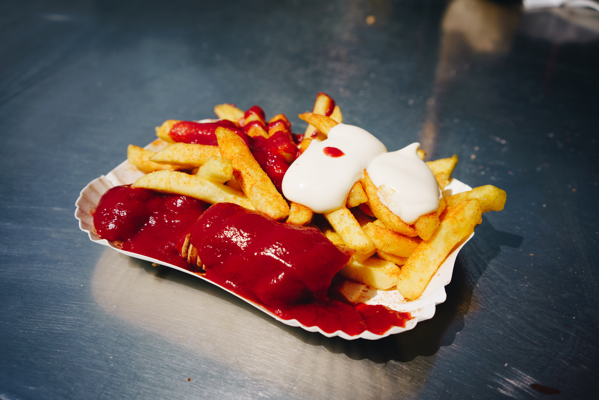

Currywurst

Description
There’s a reason over 800 million Currywursts are consumed each year in Germany
– they’re deeeelicious and have been a German institution since 1949! Learn how to make the
BEST authentic curry ketchup and traditional German Currywurst!
The currywurst is an icon of German popular culture. By tradition, every candidate for the mayor of Berlin is photographed at a currywurst stand.
The song "Currywurst" on Herbert Grönemeyer's 1982 album Total Egal is a tribute to the snack.
Ingredients
- 1 tablespoon olive oil
- 1/2 cup chopped yellow onion
- 1 small clove garlic
- 1 1/2 tablespoons quality curry powder
- 1 tablespoon quality sweet paprika
- 1/8 teaspoon ground cloves
- 1/8 teaspoon ground cinnamon
- 1 cup ketchup
- 1 tablespoon tomato paste
- 5 tablespoons vegetable or chicken broth
- 1 tablespoon apple cider vinegar
- 1 tablespoon honey
- 1 teaspoon quality Worcestershire sauce
- 1 teaspoon sugar
- 1/4 teaspoon prepared yellow mustard
- 1/2 teaspoon salt
- 1/8 teaspoon freshly ground black pepper
- pinch of cayenne pepper (optional, for more heat)
- 4 genuine German bratwursts, bockwurst, rotwurst or weisswurst
- extra curry powder for sprinkling
- French fries or crispy bread rolls (Brötchen) for serving
Steps
- Heat the oil in a small saucepan and cook the onions just until soft and translucent. Do not brown them. Add the garlic and cook for another minute. Add the curry powder, paprika, cloves and cinnamon and cook for 30 seconds.
Add all remaining ingredients and bring to a simmer. Reduce the heat to medium, cover and simmer for 15 minutes, stirring occasionally. Use an immersion blender or transfer to a blender and puree until smooth. Let the mixture
cool completely and then refrigerate for a day before using to allow time for the flavors to meld.
- Makes 1 1/2 cups. The curry ketchup will keep for up to a month in the fridge.
- HOW TO MAKE CURRYWURST:
- If the sausages are not pre-cooked, first poach them in lightly simmering water. The next step is to grill/fry them to finish them off.
You can either grill or pan-fry the sausages.
The important thing is to cook them until they develop a thick and crispy browned outer crust. (So if you're pan-frying, be sure to use enough oil.)
Some curry wurst stands also cut vertical slits along the currywurst to prevent them from bursting open while cooking and then the sausages are sliced along the lines into bite-sized chunks before serving.
- To serve, slice the wursts vertically into bite-sized pieces, top with some curry ketchup, and sprinkle with curry powder. Serve with French fries or a crispy bread roll (Brötchen). Currywurst and fries/Brötchen
are served in paper food trays and eaten with currywurst toothpicks.
Go Back